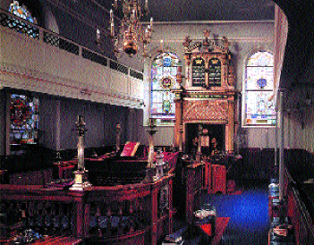

Plymouth Hebrew Congregation (Plymouth, England)
REPETITION OF THE SHMONEH ESREH
LORD, OUR GOD, OUR FOREFATHERS1, (1-OF-3)2 ABRAHAM3, (2-OF-3) ISAAC4, (3-OF-3) JACOB5, WORSHIP YOU. PASS-DOWN'bit by bit'. WE ALSO WORSHIP YOU. YOURSELF-God STRONG*, ADVANCED*6, WONDERFUL*. WORLD~GENERAL, YOU CONTROL. EVERYTHING GOOD, YOU alt.GIFT-TO"each"7. INDEX-LIST-OF-38, INTERNALIZE9 YOUR LAW, MEAN JEWISH PEOPLE HAVE RIGHT YOU SEND MESSIAH10 SAVE US. WHY? YOU LOVE US. WE PRAISE YOU. WHY? YOU LORD, GOD, KING ADVANCED THROUGH PRAISE, APPROPRIATE THANK++, CAUSE MIRACLE11, ENJOY OUR MUSIC, KING, GOD, (2h)#ALL12 LIFE FROM YOU.
YOU KING, HELPER, SAVIOR, PROTECTOR. WE PRAISE YOU, LORD. WHY? YOU PROTECT ABRAHAM IDEA~LIKE13 SHIELD14.
SUPPOSE SOMEONE DIE. YOU SUMMON, GET-UP LIVE. POWER YOURS+ CONTINUE FOREVER. YOU HELP-ctr LIVE CONTINUE.
YOU SOFT-HEARTED15. SOMEONE DIE, YOU HAVE-MERCY-ON-ctr. COME-ON16, GET-UP, LIVE FOREVER CAN. (<) SOMEONE FAIL, YOU SUPPORT. (>) SOMEONE SICK, YOU HELP RECOVER. (<) OPPRESSION17, YOU OPPRESSION-OFF18. (>) SOMEONE LOWERED-INTO-GRAVE19 GRAVE, TRUST YOU HELP-ctr CAN. WHO HAVE POWER LIKE YOU WHO? IDEA~LIKE KING, (<) BLAME RIGHT, GO-AHEAD20 KILL, (>) BLAME WRONG, ALLOW LIFE. SAVE, YOURS+.
WE TRUST YOU, SOMEONE DIE. YOU SUMMON, GET-UP LIVE. WE PRAISE. WHY? YOU HELP DEAD, GET-UP LIVE.
KEDUSHAH
Cong. then reader - WE RESPECT YOU, ANNOUNCE YOURSELF HOLY PARALLEL ANGEL BODY (2h)5wg-CL'body burns'21 THEIR SECRET CONVERSATION IN HIS HOLY PLACE ANNOUNCE YOUR NAME HOLY LIKE PROPHET WRITE-DOWN QUOTE ANGEL SUMMON EACH-OTHER SAY "WHAT"?
All - HOLY++-upward. LORD HIMSELF CONTROL US. EARTH~GENERAL SHOW"all" HIS GLORY.
Cong. then reader - HIS GLORY OVERFLOW22 WORLD. ANGEL THEMSELVES SERVE GOD TELL TELL EACH-OTHER QUOTE.
All - WE (<) PRAISE, (>) HONOR LORD. WHERE FROM? HIS SPECIAL PLACE.
Cong. then reader - REALLY-WANT23 GOD LOOK-DOWN-ON-us24 HAVE-MERCY-ON-us SEND GRACE25 TO HIS PEOPLE. THEY ANNOUNCE HIS NAME ONLY-ONE26. EVERY-MORNING, EVERY-EVENING, EVERY-DAY SAME-OLD-THING, TWICE, WITH L-O-V-E, THEY ANNOUNCE QUOTE:
All-
JEWISH PEOPLE, ATTEND-TO-me27, KNOW-THAT28 LORD HIMSELF OUR GOD. LORD, ONLY-ONE.
Cong. then reader - HE OUR GOD. HE OUR HEAVENLY-FATHER29. HE OUR KING. HE OUR SAVIOR. HE MERCY-ON-us WILLING, (2h)#ALL LIVE THINGS MANY-LOOK-AT-us30 WITNESS31, OPPRESSION-OFF AGAIN*. LORD SAY, ME YOUR GOD TAKE-CARE-OF (2h)YOU.
All - LORD, OUR MASTER, STRONG* BEAT (2h)#ALL. EARTH~GENERAL KNOW YOUR NAME STRONG CRAZY-FOR32. LORD BECOME KING RULE EARTH GENERAL WILL. THAT DAY PEOPLE RECOGNIZE LORD ONLY-ONE PLUS HIS NAME ONLY-ONE.
Reader - GOD HOLY WRITE SAY "WHAT"?
All - LORD CONTROL LIKE KING FOREVER. MOUNTAIN Z-I-O-N ITS GOD, GENERATION"step by step", HALLELUJAH33.
Reader - GENERATION"step by step" WE TELL-STORY YOU WONDERFUL*. FOREVER FOREVER WE ANNOUNCE YOU HOLY. WE NEVER STOP PRAISE YOU FOREVER FOREVER. WHY? YOU GOD WONDERFUL* HOLY KING. WE PRAISE YOU LORD. WHY? YOU GOD HOLY.
All the text in grey from here to end is for the Sabbath, unless otherwise stated.
YOU GIFT-TO-us US, LORD, OUR GOD, WITH L-O-V-E SABBATH34 REST ASSEMBLE35 HAPPY, HOLIDAY36 CELEBRATE, TODAY SABBATH PLUS HOLIDAY SHAVUOT37, TIME-PERIOD YOU GIFT-TO-us TORAH38, WITH LOVE, ASSEMBLE HOLY, LOOK-BACK39 REMEMBER ESCAPE EGYPT.
GOD EXPEL40 US, FORCE-us LEAVE OUR NATION. OUR COUNTRY NOW FAR-AWAY. WHY? WE SIN. WE GO JERUSALEM41, APPEAR TEMPLE, BOW-DOWN YOU, CAN'T. WE REALLY-WANT DO OUR REPONSIBILITY IN HOUSE YOU CHOOSE FOR YOURSELF. ITSELF GREAT, HOUSE HOLY. INSIDE USED-TO-BE YOUR NAME ANNOUNCE. BUT YOU DECIDE GO-AHEAD DESTROY TEMPLE. HOPE YOU WILLING, LORD OUR GOD PLUS GOD FOR OUR FOREFATHERS, KING MERCY-ON-us US, PLEASE AGAIN SOFT-HEARTED ABOUT US. ALLOW YOUR MERCY OVERFLOW, MEAN BUILD AGAIN TEMPLE WITH GLORY CRAZY-FOR. OUR HEAVENLY-FATHER, OUR KING, SHOW"all" GLORY YOURSELF KING SOON. COME-DOWN42 GO-WITH43 US. MEAN EVERYTHING LIVE WITNESS CAN. JEWISH PEOPLE SPREADwg DIFFERENT++ COUNTRY. NORTH, SOUTH, EAST, WEST, PLEASE COLLECT"each". ALLOW US ASSEMBLE (but not for Shemini Atzeret) MOUNTAIN Z-I-O-N, IN YOUR CITY, SING HAPPY. JERUSALEM, HOME FOR YOUR HOLY PLACE, THRILLED FOREVER. #DO-DO? OFFER-UP44 WHAT YOU COMMAND, OFFER"over time" FOLLOW YOUR ORDER, ADDITIONAL OFFER LIKE YOUR LAW REQUIRE. PLUS ADDITIONAL OFFER TODAY SABBATH PLUS SHAVUOT. WE APPROACH45 CLOSE-TO YOU WITH L-O-V-E. FOLLOW COMMANDMENT YOU TELL-us US. HOW? PUT-DOWN46 YOUR TORAH THROUGH MOSES47 YOUR SERVANT LIKE YOU EXPRESS GLORY48, QUOTE:
On the Sabbath:
EVERY-WEEK SABBATH #DO-DO? LAMB ONE-YEAR-OLD TWO-OF-THEM@rt OFFER-UP. THEIR-rt BODY PERFECT MUST. PLUS TWO-TENTHS MEASURE F-L-O-U-R GRIND"zz"49 MIX O-L-I-V-E O-I-L. WINE POUR-OVER50. OFFER+ LIFT-UP51 APPROPRIATE SABBATH MUST PLUS WINE POUR-OVER OFFER-up"over time" MUST.
SAME DAY FIRST FRUIT PICK, CEREAL52 NEW OFFER-UP LORD, THAT FESTIVAL SHAVUOT. SUMMON ASSEMBLE, HOLY. WORK"over time"+sta, FORBIDDEN. BRING OFFER+ LIFT-UP LORD. SMELL RISE-UP53, LORD TAKE-IN-BY-NOSE54 SATISFIED. BULL55 YOUNG TWO*, RAM56 ONE*, ONE-YEAR-OLD LAMB SEVEN. UNDERSTAND (2h)#ALL PERFECT MUST. CEREAL OFFER+ PLUS WINE POUR-OVER LIKE FINISH TELL. THREE-TENTH MEASURE FOR EACH BULL, TWO-TENTH MEASURE FOR EACH RAM, ONE-TENTH MEASURE FOR EACH LAMB, PLUS WINE POUR-OVER. SIN, GOAT MALE COVER-UP. AND OFFER"over time" TWO* FOLLOW LAW.
On the Sabbath:
YOU KING, JEWISH PEOPLE CELEBRATE MUST. SABBATH LAW, THEY-rt FOLLOW CHERISH. PEOPLE THEMSELVES-rt MAKE SEVENTH DAY HOLY, YOU alt.GIFT-TO-rt"each" (<) SATISFIED, (>) THRILLED. SEVENTH DAY, YOU KISS-FIST57 MAKE HOLY. THAT YOURSELF-God LABEL TOP* CHERISH DAY. LOOK-BACK REMEMBER GOD MAKE (<) HEAVEN, (>) EARTH.
OUR GOD PLUS GOD FOR OUR FOREFATHERS, REALLY-WANT WE REST, YOU HAPPY. KING SOFT-HEARTED, HAVE-MERCY-ON us US. YOU GOOD*, KIND YOU. ALLOW US SEARCH-FOR YOU. TWO-OF-US-'God and me' REALLY-WANT #BACK-WITH-God58 FOR S-A-K-E OUR FOREFATHERS THEMSELVES-lf UPRIGHT59. BUILD AGAIN YOUR HOUSE LIKE BEFORE. SET-UP YOUR HOLY TEMPLE RIGHT PLACE. SHOW-us US BUILD AGAIN, WE HAPPY ITSELF-lf PERFECT. ALLOW KOHEN GROUP AGAIN OFFER-UP AND LEVITE GROUP AGAIN SING. ALLOW JEWISH PEOPLE (2h)#ALL GO-#BACK-TO ISRAEL. HAPPEN? WE GO-TO JERUSALEM, SHOW-UP TEMPLE, BOW-DOWN YOU , DURING THREE SPECIAL HOLIDAY, LIKE PUT-DOWN TORAH, QUOTE: THREE TIME DURING YEAR #ALL-OF-YOU60 MALE SHOW-UP APPROACH LORD YOUR GOD IN PLACE HE DECIDE. WHEN? (1-OF-3) HOLIDAY PASSOVER, (2-OF-3) HOLIDAY SHAVUOT, (3-OF-3) HOLIDAY SUKKOT. DON'T APPROACH LORD WITHOUT GIFT. KNOW-THAT LORD YOUR GOD BLESS VARIOUS. GIFT DEPEND (<) RICH, (>) POOR, RANGE61.
WHILE WE ASSEMBLE, CELEBRATE, BLESS US, LORD, OUR GOD. HOW? LIFE, PEACE, HAPPY, THRILLED, LIKE YOU WANT PLUS PROMISE BLESS US. OUR GOD PLUS GOD FOR OUR FOREFATHERS, ACCEPT OUR REST. MAKE US HOLY THROUGH YOUR COMMANDMENTS PLUS ALLOW US INNVOLVED YOUR TORAH. MAKE US SATISFIED US WITH YOUR GOOD THINGS PLUS HAPPY ABOUT YOUR SALVATION. MAKE OUR HEART PURE62 SERVE YOU TRUE~BIZ63. PASS-DOWN FOR US, LORD, OUR GOD, WITH LOVE AND FAVOR64, HAPPY AND THRILLED, SABBATH AND ASSEMBLE HOLY YOURS. WE REALLY-WANT JEWISH PEOPLE, THEMSELVES MAKE YOUR NAME HOLY, CELEBRATE TOGETHER YOU. LORD, OUR GOD, WE PRAISE. WHY? YOUSELF MAKE HOLY SABBATH, JEWISH PEOPLE, PLUS YOUR SPECIAL TIME-PERIOD.
SHOW-us FAVOR, LORD OUR GOD, WE JEWISH PEOPLE AND OUR PRAYER. WE REALLY-WANT GO-#BACK SERVE IN TOP* HOLY PLACE IN TEMPLE. JEWISH FIRE OFFERING AND PRAYER, PLEASE ACCEPT WITH L-O-V-E, WITH FAVOR. REALLY-WANT YOUR PEOPLE SERVE, YOU SATISFIED ALWAYS.
If the Kohanim ascend to pronounce the blessing, continue here65:
WE REALLY-WANT PRAY"over time" YOU SATISFIED EQUAL OFFER-UP BURN~DISSOLVE PLUS OFFER-UP REGULAR. PLEASE HAVE-MERCY-ON-us US. WE REALLY-WANT TWO-OF-US'God and us' AGAIN TOGETHER MOUNTAIN Z-I-O-N, YOUR CITY, AND TEMPLE SERVICE AGAIN HAPPEN JERUSALEM. REALLY-WANT OUR EYES WITNESS YOU MERCY-ON-us GO-#BACK MOUNTAIN Z-I-O-N. MEAN SERVE YOU AMAZED LIKE USED-TO-BE LONG-LONG-AGO. WE PRAISE YOU, LORD. WHY? YOU ONLY-ONE WE SERVE AMAZED.
If the Kohanim do not ascend continue here:
REALLY-WANT OUR EYES WITNESS YOU MERCY-ON-us GO-#BACK MOUNTAIN Z-I-O-N. WE PRAISE YOU, LORD. WHY? YOU GO-#BACK MOUNTAIN Z-I-O-N TOGETHER US.
LORD, WE THANK++. KNOW-THAT OUR FOREFATHERS WORSHIP GOD. PASS-DOWN'bit by bit'. WE ALSO WORSHIP GOD PLUS TEACH"each" OUR CHILDREN WORSHIP PASS-DOWN FOREVER. YOU FOUNDATION OUR LIFE. IDEA~LIKE FIND ROCK FLAT, GO-AHEAD SET-UP HOUSE. FROM-TIME-TO-TIME SOMEONE OPPRESS JEWISH PEOPLE, YOU OFF-OPPRESSION. WE (<) (2h)THANK++, (>) PRAISE. WHY? (1) OUR LIFE OFFER-TO, TRUST CAN. (2) YOU TAKE-CARE-OF-us OUR SOUL. (3) EVERYDAY WE alt.NOTICE"each" YOUR MIRACLE. (4) ALL-DAY~ALL-NIGHT YOU (2h)alt.GIFT-TO-us GOOD~THINGS. YOURSELF GOOD*. HAVE-MERCY"over time"-ON-us. HOW? (<) SOFT-HEARTED, (2) LOVING66, END NEVER. UP-TO-NOW WE TRUST YOU AGAIN-AND-AGAIN.
OUR KING, WE (<) PRAISE, (>) ANNOUNCE YOUR NAME ADVANCED* FOREVER. WHY? LONG-LIST.
ALL PEOPLE NEED BOW-DOWN-TO FOREVER. PRAISE YOUR NAME TRUE~BIZ. GOD, YOU (<) SAVE US, (>) HELP-us US. LORD YOURSELF God-GIVE-FROM-HEART. WE PRAISE YOU. WHY? OBVIOUS.
OUR GOD PLUS GOD FOR OUR FOREFATHERS, BLESS US. HOW? SPECIAL TRIPLE BLESS IN TORAH, MOSES YOUR SERVANT HIMSELF WRITE-DOWN. USED-TO-BE AARON67 PLUS HIS SON, THEY-'index the Kohanim on the platform' KOHEN68, YOUR HOLY PEOPLE SAY "WHAT"?
If the Kohanim ascend to pronounce the blessing, continue here. If not, skip to greyed text:
LORD, OUR GOD, KING WORLD~GENERAL, WE PRAISE. WHY? YOU HELP-us US BECOME HOLY THROUGH AARON HIS CHILDREN. YOU COMMAND US "WHAT"? BLESS HIS-God's PEOPLE WITH L-O-V-E. Cong. AMEN!
(Yivaraichecha) REALLY-WANT (repeat)
(Ad-o-nai) GOD BLESS (repeat)
(Vayishmaraicha) TAKE-CARE-OF (2h)YOU. (KOHEN GROUP SING WITHOUT WORD.) TAKE-CARE-OF (2h)YOU.
(Ya'er) REALLY-WANT (repeat)
(Ad-o-nai) GOD (repeat)
(Panav) HIS 5-LOOK (repeat)
(Elecha) SEND (repeat)
(V'kunecha) GRACE. (KOHEN GROUP SING WITHOUT WORD.) GRACE.
(Yisa) REALLY-WANT (repeat)
(Ad-o-nai) GOD (repeat)
(Panav) LOOK-DOWN (repeat)
(Elecha) SMILE (repeat)
(V'yasaim) (2h)YOU. (repeat)
(Lecha) HAPPEN? (repeat)
(Shalom) INSIDE-SELF PEACE. (KOHEN GROUP SING WITHOUT WORD.) INSIDE-SELF PEACE. (CONTINUE PRAY QUIET)...
If the Kohanim do not ascend continue here:
REALLY-WANT GOD BLESS TAKE-CARE-OF (2h)YOU.
REALLY-WANT GOD HIS 5-LOOK SEND GRACE.
REALLY-WANT GOD LOOK-DOWN SMILE (2h)YOU. HAPPEN? INSIDE-SELF PEACE.
SET-UP PEACE, GOOD THINGS, BLESS, GRACE, KIND, MERCY-ON-us US PLUS (2h)#ALL YOUR JEWISH PEOPLE. BLESS US, OUR HEAVENLY-FATHER, #ALL-OF-US69 COOPERATE, YOUR 5-LOOK SHINE-DOWN-GRACE. WHY? 5-LOOK GRACE GIFT-TO-us, LORD, OUR GOD, TORAH SUPPORT LIFE PLUS KIND, UPRIGHT, BLESS, MERCY, LIFE, PEACE, WE CHERISH. REALLY-WANT YOU HAPPY BLESS YOUR JEWISH PEOPLE EVERY TIME-PERIOD, EVERY HOUR, HAVE PEACE. WE PRAISE YOU, LORD. WHY? YOU BLESS YOUR PEOPLE HAVE PEACE.
GOD HIS NAME~SHINY70, HOLY*. PRAISE GOD. WE MUST ANNOUNCE HIS WORTH. SPREAD WORLD THEREABOUTS HE HIMSELF MAKE. HOPE DURING YOUR LIFE TIME-PERIOD EVERYONE ACCEPT AUTHORITY HIS. #ALL-OF-YOU SAY, AMEN.
WE ANNOUNCE HE BLESS US. HIS NAME~SHINY, ADVANCED; WE PRAISE. WE HONOR. WE ADMIT HIS NAME HOLY. PRAISE GOD. WE REALIZE (1) ANNOUNCE, (2) HONOR, (3) PRAISE, INDEX-LIST-OF-3 NOT ENOUGH. #ALL-OF-YOU SAY AMEN.
EVERYTHING #ALL-OF-US JEWISH PEOPLE (<) PRAY, (>) BEG, HEAVENLY-FATHER PLEASE ACCEPT. #ALL-OF-YOU SAY AMEN.
PRAY HEAVEN SEND (<) PEACE, (>) LIFE, FOR US, PLUS JEWISH PEOPLE GENERAL. #ALL-OF-YOU SAY AMEN.
FAR-AWAY HEAVEN, GOD ESTABLISH PEACE. PRAY HERE SAME-AS-Heaven. #ALL-OF-YOU SAY, AMEN.
HAVE-NONE71 LIKE OUR GOD; HAVE-NONE LIKE OUR MASTER72; HAVE-NONE LIKE OUR KING; HAVE NONE LIKE OUR SAVIOR.
WHO LIKE OUR GOD? WHO LIKE OUR MASTER? WHO LIKE OUR KING? WHO LIKE OUR SAVIOR.
WE SHOULD THANK OUR GOD; WE SHOULD THANK OUR MASTER; WE SHOULD THANK OUR KING; WE SHOULD THANK OUR SAVIOR.
GO-AHEAD PRAISE OUR GOD; GO-AHEAD PRAISE OUR MASTER; GO-AHEAD PRAISE OUR KING; GO-AHEAD PRAISE OUR SAVIOR.
YOU OUR GOD; YOU OUR MASTER; YOU OUR KING; YOU OUR SAVIOR.
INCENSE73 MIX "WHAT"? (CONTINUE PRAY QUIET)...
ME SPEAK PEACE WITH (2h)YOU FOR S-A-K-E MY BROTHER~SISTER. ME REQUEST YOUR BENEFIT FOR S-A-K-E LORD, OUR GOD, HIS HOUSE. LORD GIFT-TO HIS PEOPLE STRENGTH WILL. LORD BLESS HIS PEOPLE WILL.
GOD HIS NAME~SHINY, HOLY*. PRAISE GOD. WE MUST ANNOUNCE HIS WORTH. SPREAD WORLD THEREABOUTS HE HIMSELF MAKE. HOPE DURING YOUR LIFE TIME-PERIOD EVERYONE ACCEPT AUTHORITY HIS. #ALL-OF-YOU SAY, AMEN.
WE ANNOUNCE HE BLESS US. HIS NAME~SHINY, ADVANCED; WE PRAISE. WE HONOR. WE ADMIT HIS NAME HOLY. PRAISE GOD. WE REALIZE (1) ANNOUNCE, (2) HONOR, (3) PRAISE, INDEX-LIST-OF-3 NOT ENOUGH. #ALL-OF-YOU SAY AMEN.
WE PRAY FOR ISRAEL, (<) RABBI74 HE-left TEACH"each", HIS-left STUDENT THEY-right, PASS-DOWN TORAH. HERE OR ANY PLACE. PASS-OUT-TO"all" PEACE, GRACE, KINDNESS, MERCY, LONG LIFE, FEED"each". HEAVENLY-FATHER, SAVE US. #ALL-OF-YOU SAY AMEN.
PRAY HEAVEN SEND (<) PEACE, (>) LIFE, FOR US, PLUS JEWISH PEOPLE GENERAL. #ALL-OF-YOU SAY AMEN.
FAR-AWAY HEAVEN, GOD ESTABLISH PEACE. PRAY HERE SAME-AS-Heaven. #ALL-OF-YOU SAY, AMEN.
OUR RESPONSIBILITY "WHAT"? PRAISE LORD HIMSELF CONTROL (2h)#ALL. ANNOUNCE HE ADVANCED*, (<) HEAVEN SET-UP, (>) EARTH SET-UP. OTHER PEOPLE THEY-rt WORSHIP "WHAT", (<) WOOD WHITTLE75 SHAPE, (>) STONE CHISEL76 SHAPE. WE BEND-KNEES77 BOW-DOWN78. WHY? HE KING TOP, HOLY*. APPROPRIATE PRAISE HIM. HEAVEN, HE SET-UP IDEA~LIKE TENT'stretch over head'79. EARTH, HE FOUNDATION. STAR (2h)5:-CL'stars in the sky'80 SHOW-TO-us HIS NAME~SHINY. MOUNTAIN, WE LOOK-AT"over time", HIS POWER CLEAR. HIMSELF, OUR GOD ONLY. HIMSELF, OUR KING. RULER INDEX"each"@lf COMPARE-lf-WITH-GOD, NOTHING-TO-IT THEM-lf. TORAH, TELL-STORY QUOTE, NOW+ KNOW-THAT LORD HIMSELF TRUE GOD. HE CONTROL HEAVEN. HE CONTROL EARTH. HIS AUTHORITY SUPREME. (CONTINUE PRAY QUIET)...
GOD~BOOK FORSEE81 QUOTE LORD WILL BECOME KING. MEAN, HE CONTROL EARTH~THEREABOUTS COMPLETE*. SAME~TIME HAPPEN, LORD BECOME ONLY-ONE. PLUS HIS NAME BECOME ONLY-ONE.
Mourner. GOD HIS NAME~SHINY, HOLY*. PRAISE GOD. WE MUST ANNOUNCE HIS WORTH. SPREAD WORLD THEREABOUTS HE HIMSELF MAKE. HOPE DURING YOUR LIFE TIME-PERIOD EVERYONE ACCEPT AUTHORITY HIS. #ALL-OF-YOU SAY, AMEN.
Cong. and Mourner. HOPE HE CONTINUE BLESS US FROM-NOW-ON, FOREVER.
Mourner. WE ANNOUNCE HE BLESS US. HIS NAME~SHINY, ADVANCED; WE PRAISE. WE HONOR. WE ADMIT HIS NAME HOLY. PRAISE GOD. WE REALIZE (1) ANNOUNCE, (2) HONOR, (3) PRAISE, INDEX-LIST-OF-3 NOT ENOUGH. #ALL-OF-YOU SAY AMEN.
PRAY HEAVEN SEND (<) PEACE, (>) LIFE, FOR US, PLUS JEWISH PEOPLE GENERAL. #ALL-OF-YOU SAY AMEN.
FAR-AWAY HEAVEN, GOD ESTABLISH PEACE. PRAY HERE SAME-AS-Heaven. #ALL-OF-YOU SAY, AMEN.
Reader: ME INVENT SWEET SONG. WHY? MY SOUL REALLY-WANT TOGETHER YOU.
Reader: DURING ME TELL-STORY YOUR GLORY, ME HEART THIRST YOUR L-O-V-E.
Reader: ME ANNOUNCE YOUR GLORY. DOESN'T-MATTER SEE CAN'T. #DO-DO? FIND PARALLEL EXPLAIN SOMETHING BEYOND ME UNDERSTAND.
Reader: YOU ADVANCED, YOU STRONG. PROVE HOW? YOUR MIRACLES THAT.
Reader: THEY-rt VISUALIZE VARIOUS USE SYMBOL. MANY PERSPECTIVE82 HAVE, BUT STILL YOU ONLY-ONE.
Reader: TIME JUDGE US, HE OLD*~WISE. TIME FIGHT ENEMY, HE YOUNG~STRONG.
Reader: HIS TORAH GIVE-TO-us LIFE IDEA~LIKE DEW85. HE SEND BLESSING IDEA~LIKE RAIN.
Reader: HE IDEA~LIKE KOHEN ADVANCED, WEAR GOLD HEAD-BAND HIS NAME CARVED-ON-BAND87.
Reader: HIS HAIR BLACK, SHOW"all" HAVE POWER. LIKE MAN YOUNG, HIS HAIR LONG-RINGLETS89.
Reader: PEOPLE HE CHERISH, WANT BECOME HIS CROWN. SHOW"all" WORLD HIS NAME~SHINY.
Reader: ME WEAR TEFILLIN90 me-SAME-AS-God HIM. HE NEAR WHEN ME CALL-ON HIM.
Reader: MOSES HUMBLE ASK GOD HELP-lf VISUALIZE HIM. GOD SHOW-lf TEFILLIN KNOT91 BACK-OF-HEAD92.
Reader: FIRST THREE WORD TORAH, THEIR LETTER SPELL TRUTH. EVERY GENERATION SEEK RELATED-TO-God YOU.
Reader: REALLY-WANT MY PRAISE BECOME YOUR CROWN. MY PRAYER RISE-UP LIKE INCENSE SHOULD.
Reader: REALLY-WANT MY PRAISE RISE-UP YOU CREATOR, LIFE GIVER, UPRIGHT YOU.
Reader: HOPE MY PRAYER, YOU FEEL SWEET. WHY? MY SOUL REALLY-WANT TWO-OF-US TOGETHER.
(CONTINUE PRAY QUIET)...
If a mourner is present, he recites the Mourner's Kaddish below:
Mourner. GOD HIS NAME~SHINY, HOLY*. PRAISE GOD. WE MUST ANNOUNCE HIS WORTH. SPREAD WORLD THEREABOUTS HE HIMSELF MAKE. HOPE DURING YOUR LIFE TIME-PERIOD EVERYONE ACCEPT AUTHORITY HIS. #ALL-OF-YOU SAY, AMEN.
Cong. and Mourner. HOPE HE CONTINUE BLESS US FROM-NOW-ON, FOREVER.
Mourner. WE ANNOUNCE HE BLESS US. HIS NAME~SHINY, ADVANCED; WE PRAISE. WE HONOR. WE ADMIT HIS NAME HOLY. PRAISE GOD. WE REALIZE (1) ANNOUNCE, (2) HONOR, (3) PRAISE, INDEX-LIST-OF-3 NOT ENOUGH. #ALL-OF-YOU SAY AMEN.
PRAY HEAVEN SEND (<) PEACE, (>) LIFE, FOR US, PLUS JEWISH PEOPLE GENERAL. #ALL-OF-YOU SAY AMEN.
FAR-AWAY HEAVEN, GOD ESTABLISH PEACE. PRAY HERE SAME-AS-Heaven. #ALL-OF-YOU SAY, AMEN.
On Sunday recite:
TODAY SUNDAY. USED-TO-BE LEVITE94 GROUP IN HOLY TEMPLE SING "WHAT"? (CONTINUE PRAY QUIET)... (2h)#ALL GATE (2h)B-CL'gate rise'95 SHOULD. EVERY ENTRANCE OPEN-UP SHOULD. WHY? ALLOW KING GLORY ENTER. KING GLORY WHO? LORD RULE ANGEL SCADS-OF HIMSELF KING GLORY.
On Monday recite:
TODAY SUNDAY. USED-TO-BE LEVITE GROUP IN HOLY TEMPLE SING "WHAT"? (CONTINUE PRAY QUIET)... JERUSALEM ITS-rt (2h)B-CL'circular wall'96 IMPRESS-MIND. ITS-rt PALACE97 RAISE-UP"each"98. WHY? LATER DESCRIBE PASS-DOWN CAN. THERE-rt GOD, OUR GOD, FOREVER FOREVER. HE GUIDE US IDEA~LIKE PARENT WILL.
On Tuesday recite:
TODAY SUNDAY. USED-TO-BE LEVITE GROUP IN HOLY TEMPLE SING "WHAT"? (CONTINUE PRAY QUIET)... COME-ON GOD, GO-AHEAD JUDGE EARTH. WHY? YOURSELF DECIDE GIFT-TO"each" "WHAT"?
On Wednesday recite:
TODAY SUNDAY. USED-TO-BE LEVITE GROUP IN HOLY TEMPLE SING "WHAT"? (CONTINUE PRAY QUIET)...
(2h)COME-ON"each", WE NEED SING TO LORD. UP-TO-NOW GOD SAVE JEWISH PEOPLE MANY+ TIME. GREET99 HIM HOW? THANK++. SUMMON HIM WITH PRAISE. WHY? LORD HIMSELF GOD GREAT, PLUS KING GREAT MORE-THAN100 ANY KING ON EARTH.
On Thursday recite:
TODAY SUNDAY. USED-TO-BE LEVITE GROUP IN HOLY TEMPLE SING "WHAT"? (CONTINUE PRAY QUIET)... GOD FEED PEOPLE UPRIGHT WITH FOOD alt.F-CL'manna drifts down'101 PLUS WATER FROM HIS ROCK SWEET.
On Friday recite:
TODAY SUNDAY. USED-TO-BE LEVITE GROUP IN HOLY TEMPLE SING "WHAT"? (CONTINUE PRAY QUIET)... GOD~BOOK PREDICT TEMPLE RAISE-UP AGAIN WILL. WE TRUST AND HOPE UPRIGHT FROM-THEN-ON FOREVER.
On the Sabbath recite:
TODAY HOLY SABBATH. USED-TO-BE LEVITE GROUP IN HOLY TEMPLE SING "WHAT"? (CONTINUE PRAY QUIET)... PEOPLE UPRIGHT THEY-rt TAKE-OFF102 IDEA~LIKE P-A-L-M TREE. LIKE C-E-D-A-R TREE (2h)C-CL'thick trunk'103 GROW TALL*. LORD HIS HOUSE FOREST alt.PUT-IN-PLACE104. DEVELOP* CLOSE-TO GOD. BECOME OLD, STILL PRODUCE FRUIT CAN. ENTHUSIASTIC, PERKY105, THEY-rt ANNOUNCE LORD HIMSELF JUST. MY FOUNDATION, CRASH106 NEVER.
If a mourner is present, he recites the Mourner's Kaddish below:
Mourner. GOD HIS NAME~SHINY, HOLY*. PRAISE GOD. WE MUST ANNOUNCE HIS WORTH. SPREAD WORLD THEREABOUTS HE HIMSELF MAKE. HOPE DURING YOUR LIFE TIME-PERIOD EVERYONE ACCEPT AUTHORITY HIS. #ALL-OF-YOU SAY, AMEN.
Cong. and Mourner. HOPE HE CONTINUE BLESS US FROM-NOW-ON, FOREVER.
Mourner. WE ANNOUNCE HE BLESS US. HIS NAME~SHINY, ADVANCED; WE PRAISE. WE HONOR. WE ADMIT HIS NAME HOLY. PRAISE GOD. WE REALIZE (1) ANNOUNCE, (2) HONOR, (3) PRAISE, INDEX-LIST-OF-3 NOT ENOUGH. #ALL-OF-YOU SAY AMEN.
PRAY HEAVEN SEND (<) PEACE, (>) LIFE, FOR US, PLUS JEWISH PEOPLE GENERAL. #ALL-OF-YOU SAY AMEN.
FAR-AWAY HEAVEN, GOD ESTABLISH PEACE. PRAY HERE SAME-AS-Heaven. #ALL-OF-YOU SAY, AMEN.
If a mourner is present, he recites the Mourner's Kaddish below:
Mourner. GOD HIS NAME~SHINY, HOLY*. PRAISE GOD. WE MUST ANNOUNCE HIS WORTH. SPREAD WORLD THEREABOUTS HE HIMSELF MAKE. HOPE DURING YOUR LIFE TIME-PERIOD EVERYONE ACCEPT AUTHORITY HIS. #ALL-OF-YOU SAY, AMEN.
Cong. and Mourner. HOPE HE CONTINUE BLESS US FROM-NOW-ON, FOREVER.
Mourner. WE ANNOUNCE HE BLESS US. HIS NAME~SHINY, ADVANCED; WE PRAISE. WE HONOR. WE ADMIT HIS NAME HOLY. PRAISE GOD. WE REALIZE (1) ANNOUNCE, (2) HONOR, (3) PRAISE, INDEX-LIST-OF-3 NOT ENOUGH. #ALL-OF-YOU SAY AMEN.
PRAY HEAVEN SEND (<) PEACE, (>) LIFE, FOR US, PLUS JEWISH PEOPLE GENERAL. #ALL-OF-YOU SAY AMEN.
FAR-AWAY HEAVEN, GOD ESTABLISH PEACE. PRAY HERE SAME-AS-Heaven. #ALL-OF-YOU SAY, AMEN.
Footnotes
A. From http://www.jewish-holiday.com/awesome.html (Awesome), which is no longer extant.